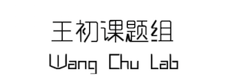
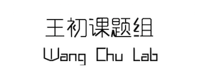
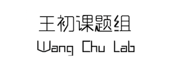

2018:Gao, J.#; Yang, F.#; Che, J.; Han, Y.; Wang, Y.; Chen, N.; Bak, W., D.; Lai, S.; Xie, X.; Weerapana, E.; Wang, C.* , Selenium-Encoded Isotopic Signature Targeted Profiling. ACS Cent Sci. 2018 In press. Yang, F.#; Gao, J.#; Che, J.; Jia, G.; Wang, C.* , A Dimethyl-Labeling-Based Strategy for Site-Specifically Quantitative Chemical Proteomics . Anal Chem. 2018 Bak, W., D.*; Gao, J.; Wang, C. ; Weerapana, E.*, A Quantitative Chemoproteomic Platform to Monitor Selenocysteine Reactivity within a Complex Proteome . Cell Chem Biol. 2018 , Ye, Z.; Zhang, X.; Zhu, Y.; Song, T.; Chen, X.; Lei, X.*; Wang, C.* , Chemoproteomic Profiling Reveals Ethacrynic Acid Targets Adenine Nucleotide Translocases to Impair Mitochondrial Function . Molecular pharmaceutics 2018 , 15 (6), 2413-2422. Dai, J.; Liang, K.; Zhao, S.; Jia, W.; Liu, Y.; Wu, H.; Lv, J.; Cao, C.; Chen, T.; Zhuang, S.; Hou, X.; Zhou, S.; Zhang, X.; Chen, X. W.; Huang, Y.; Xiao, R. P.; Wang, Y. L.; Luo, T.; Xiao, J. Y.; Wang, C* , Chemoproteomics reveals baicalin activates hepatic CPT1 to ameliorate diet-induced obesity and hepatic steatosis . Proc. Natl. Acad. Sci. U. S. A. 2018 , 115 (26), E5896-e5905. Chen, Y.; Liu, Y.; Lan, T.; Qin, W.; Zhu, Y.; Qin, K.; Gao, J.; Wang, H.; Hou, X.; Chen, N.; Friedmann Angeli, J. P.; Conrad, M.; Wang, C* , Quantitative Profiling of Protein Carbonylations in Ferroptosis by an Aniline-Derived Probe . J. Am. Chem. Soc. , 2018, 140, 13, 4712-4720. (ACS Editor’s Choice and JACS Spotlights) Chen, N.; Liu, J.; Qiao, Z.; Liu, Y.; Yang, Y.; Jiang, C.; Wang, X.; Wang, C.* , Chemical proteomic profiling of protein N-homocysteinylation with a thioester probe . Chem. Sci. , 2018, 9, 2826-2830. Qin, W.#; Qin, K.#; Fan, X.; Peng, L.; Hong, W.; Zhu, Y.; Lv, P.; Du, Y.; Huang, R.; Han, M.; Cheng, B.; Liu, Y.; Zhou, W.; Wang, C.* and Chen, X.*, Artificial Cysteine S-Glycosylation Induced by Per-O-Acetylated Unnatural Monosacharides during Metabolic Glycan Labeling . Angew. Chem. Int. Ed. , 2018 , 57, 1817. (Back Cover and Very Important Paper) 2017:Wang, H.#; Chen, X.#; Li, C.#; Liu, Y.; Yang, F.; Wang, C.* , Sequence-Based Prediction of Cysteine Reactivity Using Machine Learning . Biochemistry 2017 , 57, 4, 451-460 (ACS Editor’s Choice) Li, X.#; Xiong, X.#; Zhang, M.#; Wang, K.#; Chen, Y.#; Zhou, J.; Mao, Y.; Lv, J.; Yi, D.; Chen, X. W.; Wang, C. ; Qian, S. B.; Yi, C.*, Base-Resolution Mapping Reveals Distinct m1A Methylome in Nuclear- and Mitochondrial-Encoded Transcripts. Molecular Cell , 2017 , 68, 1–13. Qin, W.; Lv, P.; Fan, X.; Quan, B.; Zhu, Y.; Qin, K.; Chen, Y.; Wang, C.*; Chen, X.*, Quantitative time-resolved chemoproteomics reveals that stable O-GlcNAc regulates box C/D snoRNP biogenesis. Proc. Natl. Acad. Sci. U. S. A. , 2017, 114 (33), E6749-e6758. Zhuang, S.#; Li, Q.#; Cai, L.; Wang, C.*; Lei, X.*, Chemoproteomic Profiling of Bile Acid Interacting Proteins. ACS Cent Sci , 2017, 3 (5), 501-509. Chen, Y.; Cong, Y.; Quan, B.; Lan, T.; Chu, X.; Ye, Z.; Hou, X.; Wang, C.*, Chemoproteomic profiling of targets of lipid-derived electrophiles by bioorthogonal aminooxy probe . Redox biology , 2017, 12, 712-718. Liang, X.; Lv, F.; Wang, B.; Yu, K.; Wu, H.; Qi, Z.; Jiang, Z.; Chen, C.; Wang, A.; Miao, W.; Wang, W.; Hu, Z.; Liu, J.; Liu, X.; Zhao, Z.; Wang, L.; Zhang, S.; Ye, Z.; Wang, C. ; Ren, T.; Wang, Y.; Liu, Q., Discovery of 2-((3-Acrylamido-4-methylphenyl)amino)-N-(2-methyl-5-(3,4,5-trimethoxybenzamido)p henyl)-4-(methylamino)pyrimidine-5-carboxamide (CHMFL-BMX-078) as a Highly Potent and Selective Type II Irreversible Bone Marrow Kinase in the X Chromosome (BMX) Kinase Inhibitor. J. Med. Chem. , 2017 , 60 (5), 1793-1816. 2016:Chen, Y. ; Qin, W.; Wang, C.*, Chemoproteomic profiling of protein modifications by lipid-derived electrophiles . Curr. Opin. Chem. Biol. , 2016, 30, 37-45. Yang, Y.; Song, H.; He, D.; Zhang, S.; Dai, S.; Lin, S.; Meng, R.; Wang, C.*; Chen, P. R.*, Genetically encoded protein photocrosslinker with a transferable mass spectrometry-identifiable label. Nat. Commun. , 2016, 7, 12299. Zhao, S.; Dai, J.; Hu, M.; Liu, C.; Meng, R.; Liu, X.; Wang, C.; Luo, T.*, Photo-induced coupling reactions of tetrazoles with carboxylic acids in aqueous solution: application in protein labelling. Chem. Commun. (Camb.) , 2016, 52 (25), 4702-5. Wang, A.#; Yan, X. E. #; Wu, H. #; Wang, W. #; Hu, C.; Chen, C.; Zhao, Z.; Zhao, P.; Li, X.; Wang, L.; Wang, B.; Ye, Z.; Wang, J.; Wang, C.; Zhang, W.; Gray, N. S.; Weisberg, E. L.; Chen, L.; Liu, J.*; Yun, C. H.*; Liu, Q.*, Ibrutinib targets mutant-EGFR kinase with a distinct binding conformation. Oncotarget , 2016, 7 (43), 69760-69769. 2015:Wang, C.*; Chen, N., Activity-based Protein Profiling. Acta Chim. Sin. , 2015, 73 (7), 657-668. Wu, H.#; Wang, A. #; Zhang, W. #; Wang, B. #; Chen, C. #; Wang, W.; Hu, C.; Ye, Z.; Zhao, Z.; Wang, L.; Li, X.; Yu, K.; Liu, J.; Wu, J.; Yan, X. E.; Zhao, P.; Wang, J.; Wang, C.; Weisberg, E. L.; Gray, N. S.; Yun, C. H.; Liu, J.*; Chen, L.*; Liu, Q.*, Ibrutinib selectively and irreversibly targets EGFR (L858R, Del19) mutant but is moderately resistant to EGFR (T790M) mutant NSCLC Cells. Oncotarget 2015, 6 (31), 31313-22. 2014:Shannon, D. A.; Banerjee, R.; Webster, E. R.; Bak, D. W.; Wang, C.; Weerapana, E.*, Investigating the proteome reactivity and selectivity of aryl halides. J. Am. Chem. Soc. , 2014, 136 (9), 3330-3. Pre-PKU(selected publication):In Cravatt Lab:Wang, C.*; Weerapana, E.; Blewett, M. M.; Cravatt, B. F.*, A chemoproteomic platform to quantitatively map targets of lipid-derived electrophiles. Nat. Methods 2014 , 11 (1), 79-85. Rajagopalan, S.#; Wang, C.#; Yu, K.; Kuzin, A. P.; Richter, F.; Lew, S.; Miklos, A. E.; Matthews, M. L.; Seetharaman, J.; Su, M.; Hunt, J. F.; Cravatt, B. F.; Baker, D.*, Design of activated serine-containing catalytic triads with atomic-level accuracy. Nat. Chem. Biol. 2014, 10 (5), 386-91. Dix, M. M.#; Simon, G. M. #; Wang, C.; Okerberg, E.; Patricelli, M. P.; Cravatt, B. F.*, Functional interplay between caspase cleavage and phosphorylation sculpts the apoptotic proteome. Cell 2012, 150 (2), 426-40. Martin, B. R.*; Wang, C.; Adibekian, A.; Tully, S. E.; Cravatt, B. F.*, Global profiling of dynamic protein palmitoylation. Nat. Methods 2011, 9 (1), 84-9. Weerapana, E.#; Wang, C.#; Simon, G. M.; Richter, F.; Khare, S.; Dillon, M. B.; Bachovchin, D. A.; Mowen, K.; Baker, D.; Cravatt, B. F.*, Quantitative reactivity profiling predicts functional cysteines in proteomes. Nature 2010, 468 (7325), 790-5. Wang, C.; Vernon, R.; Lange, O.; Tyka, M.; Baker, D.*, Prediction of structures of zinc-binding proteins through explicit modeling of metal coordination geometry. Protein Sci. 2010, 19 (3), 494-506
Wang, C.#; Schueler-Furman, O.#; Andre, I.; London, N.; Fleishman, S. J.; Bradley, P.; Qian, B.; Baker, D.*, RosettaDock in CAPRI rounds 6-12. Proteins 2007, 69 (4), 758-63.
Wang, C.; Bradley, P.; Baker, D.*, Protein-protein docking with backbone flexibility. J. Mol. Biol. 2007, 373 (2), 503-19.
Schueler-Furman, O.#; Wang, C.#; Baker, D.*, Progress in protein-protein docking: atomic resolution predictions in the CAPRI experiment using RosettaDock with an improved treatment of side-chain flexibility. Proteins 2005, 60 (2), 187-94.
Wang, C.#; Schueler-Furman, O.#; Baker, D.*, Improved side-chain modeling for protein-protein docking. Protein Sci. 2005, 14 (5), 1328-39.
|